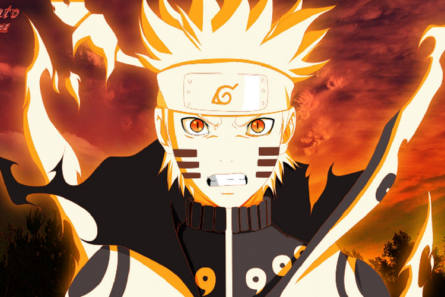
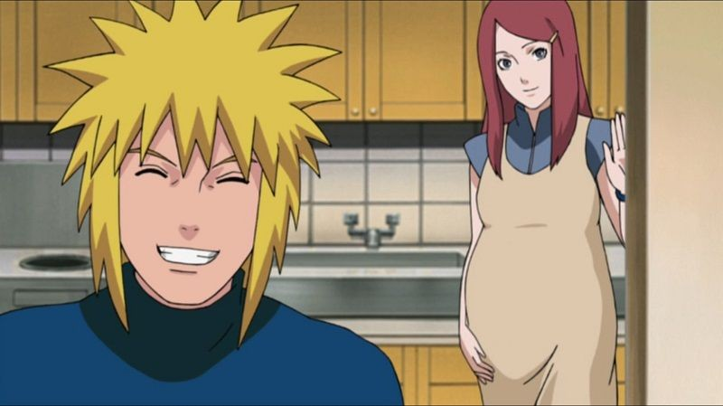
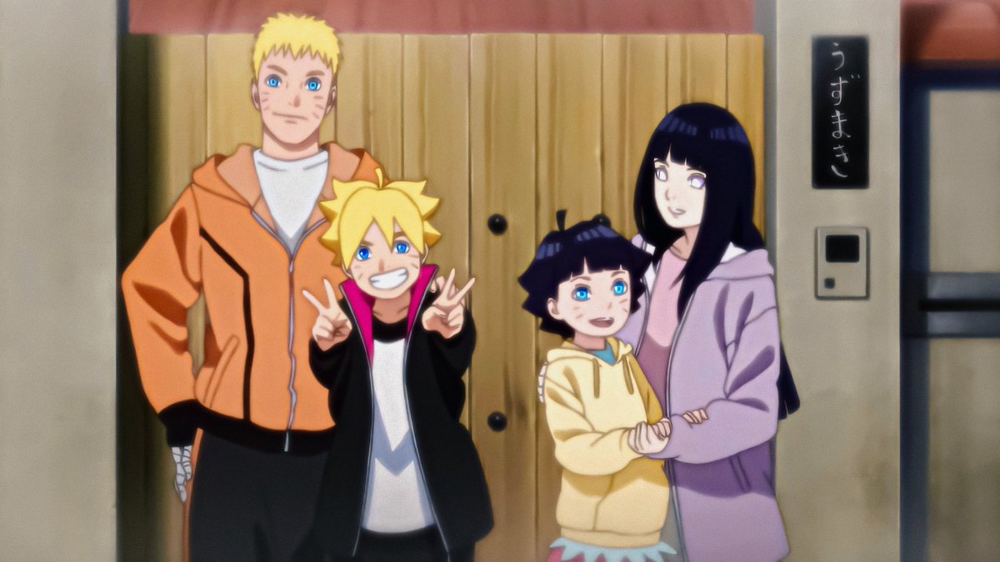
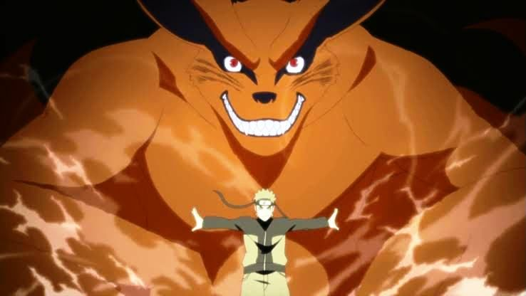

Uzumaki Naruto

Naruto Uzumaki (うずまき ナルト Uzumaki Naruto) adalah tokoh fiktif
dari serial anime dan manga Naruto. Ia merupakan tokoh utama dalam
serial ini. Naruto adalah seorang ninja dari desa Konoha
(Konohagakure), sebuah desa fiktif yang konon tersembunyi di antara
rimbunnya dedaunan hutan.
Naruto lahir pada tanggal 10 Oktober dan pada hari
kelahirannya Naruto harus kehilangan kedua orang tua nya. Oleh
karena itu, ia tidak pernah merasakan bagaimana kasih sayang orang
tua kepada anaknya. Dengan dukungan dari teman-teman dan
guru-gurunya, Naruto tumbuh menjadi pemuda yang ceria, optimis, dan
pemberani.
Naruto memiliki paras yang menawan dengan rambut kuning
dan 3 garis di setiap pipinya. Naruto memiliki sifat yang jail,
baik, dan sangat peduli dengan teman - temannya. Ia bercita-cita
ingin menjadi Hokage atau pemimpin desa. Ia juga memiliki jalan
ninja yaitu tidak akan pernah menarik kata-katanya kembali. Oleh
karena tekadnya yang besar dan sesuai dengan jalan ninjanya,
sekarang Naruto berhasil menjadi seorang Hokage yang sayang dan
menjaga seluruh orang. Naruto juga sudah memiliki istri dan anak
yang sayang kepadanya.
Parents of Naruto Uzumaki

Uzumaki Naruto memiliki orang tua yang sangat berbakat. Ayah nya
bernama Namikaze Minato dan ibunya bernama Uzumaki Khusina. Mereka
berdua adalah shinobi yang kuat dari desa Konohagakure.
Minato memiliki wajah yang sangat tampan dan memiliki
rambut berwarna kuning. Ia memiliki sifat yang sangat baik dan
ramah. Minato merupakan ninja yang sangat berbakat dan memiliki
jurus pamungkas yaitu "Hiraishin" alias teknik ruang dan waktu
dimana ia bisa berpindah tempat dengan sangat cepat ke tempat yang
sudah ia tandai. Karena jurus pamungkasnya tersebut, Minato mendapat
julukan yaitu "Si Kilat Kuning" dan ditakuti oleh shinobi desa lain.
Selain menjadi shinobi, Minato juga mengabdikan dirinya sebagai
Hokage ke-4. Namun sayangnya saat ia menjadi Hokage, ia harus
mengorbankan nyawanya demi menyelamatkan desa. Ia meninggal di hari
yang sama dengan hari dimana Naruto lahir.
Kushina memiliki wajah yang sangat cantik dan memiliki
rambut merah yang sangat panjang. Ia memiliki sifat yang sangat baik
dan ramah namun saat marah ia sangat menyeramkan. Kushina merupakan
shinobi keturunan klan Uzumaki dimana anggota klan tersebut memiliki
cakra dengan jumlah yang sangat banyak dibanding dengan klan lain.
Kushina merupakan Jinchuriki (Wadah bagi Biju) dari Kyuubi atau
rubah ekor sembilan. Dimana Kyuubi adalah biju terkuat diantara 9
lainnya. Tidak sembarang orang yang dapat menahan kekuatan biju di
dalam dirinya. klan Uzumaki dipercayakan secara turun menurun dapat
menjadi Jinchuriki dari Kyubi karena Chakra dari Uzumaki sangatlah
besar dan kuat. Saat Kushina melahirkan Naruto, Kyuubi ditarik
keluar dari tubuh Khusina oleh musuh dan menyebabkan kehancuran pada
desa. Kushina mengorbankan nyawanya untuk menyelamatkan desa dan
meninggal pada hari yang sama dengan hari lahirnya Naruto.
Little Family

Uzumaki Naruto memiliki keluarga kecil yang beranggotakan 4 orang.
Terdiri dari dirinya sendiri, Istrinya yaitu Hyuga Hinata, anak
sulung nya yaitu Uzumaki Boruto, dan anak terakhirnya yaitu Uzumaki
Himawari. Keluarga kecil Naruto adalah keluarga yang sangat nyaman
dan terdapat kasih sayang yang besar di dalamnya.
Hyuga Hinata adalah Istri dari Naruto yang merupakan
shinobi dari desa Konoha dan memiliki keturunan dari klan Hyuga.
Hinata lahir pada tanggal 27 Desember. Ia merupakan anak pertama
dari pemimpin klan Hyuga sehingga ia menjadi ahli waris dari klan
Hyuga. Hinata memiliki wajah yang sangat cantik dengan mata
byakugannya yang sangat menawan. Hinata memiliki rambut yag lurus
dan berwarna ungu. Hinata memiliki sifat yang sangat lembut,
penyayang, dan setia. Namun ia bisa berubah jadi menyeramkan jika ia
marah dan mengaktifkan byakugannya. Setelah melahirkan, Hinata
berfokus untuk menjadi ibu rumah tangga. Ia merupakan ibu yang
sangat hebat untuk kedua anaknya.
Uzumaki Boruto adalah anak pertama dari Naruto dan
Hinata. Boruto lahir pada tanggal 27 Maret. Boruto memiliki tampang
seperti ayahnya yaitu dengan rambut kuning dan terdapat 2 garis di
setiap pipinya. Boruto merupakan Ninja yang sangat berbakat di
usianya dan statusnya yang masih Genin. Ia mewarisi jutsu seperti
ayahnya yaitu Rasengan. Boruto memiliki teman-teman yang peduli
dengannya. Saat Naruto diangkat menjadi Hokage, Boruto sempat merasa
kehilangan perhatian dari ayahnya sehingga ia menjadi nakal untuk
mencari perhatiannya termasuk curang dalam menjalani ujian. Namun
pada akhirnya Boruto tersadar bahwa ia tidak boleh seperti itu dan
berubah menjadi lebih baik.
Uzumaki Himawari adalah anak kedua dari Naruto dan
Hinata. Himawari lahir pada tanggal 1 Agustus. Himawarai memiliki
paras cantik seperti ibunya dengan rambutnya berwarna ungu, namun ia
juga memiliki 2 garis di setiap pipinya seperti kakaknya. Himawari
memiliki garis keturunan dari klan Uzumaki namun menariknya ia dapat
membangkitkan byakugan yang merupakan kekuatan dari klan Ibunya
yaitu Hyuga. Himawari dapat membangkitkan byakugannya tanpa latihan
dan pada umur yang sangat muda yaitu 4 tahun. Himawari memiliki
sifat yang sangat periang dan ramah. Sampai sekarang ia belum
memutuskan apakah nantinya dia akan menjadi Shinobi atau bukan.
Himawari bilang ingin mencoba banyak jenis pekerjaan terlebih dahulu
agar ia dapat memutuskan akan menjadi apa nantinya.
Kurama

Kurama atau Kyuubi atau Rubah Ekor Sembilan adalah salah satu dari 9
bijuu yang diciptakan oleh Hagoromo Otsutsuki. Kyuubi merupakan
bijuu terkuat dibandgingkan dengan 8 bijuu lainnya. Ia memiliki
bentuk seperti rubah dan berwarna orange. Kyuubi sangat susah untuk
dikendalikan dan memiliki kekuatan yang sangat besar, sehingga hanya
orang dengan jumlah chakra yang banyak saja yang kuat untuk menjadi
jinchuuriki dari Kyuubi.
Sejak dahulu kala ia selalu dijadikan sebagai alat
perang oleh manusia. Kyuubi sengat membenci manusia dan tidak akan
segan untuk membunuh manusia. Ia juga tidak pernah berdamai dengan
jinchuurikinya. Ia memiliki rasa kejahatan yang sangat besar. Naruto
sudah menjadi jinchuuriki dari Kyuubi sejak ia lahir sehingga saat
itu juga tidak ada yang berani mendekat dengan Naruto karena takut
dengan Kyuubi yang ada di dalam tubuhnya. Namun karena kebaikan,
keinginan, dan usaha Naruto, akhirnya Kyuubi dapat membuang jauh
rasa kejahatannya dan berdamai dengan Naruto dan mau berbagi
kekuatannya untuk menyelamatkan dunia.